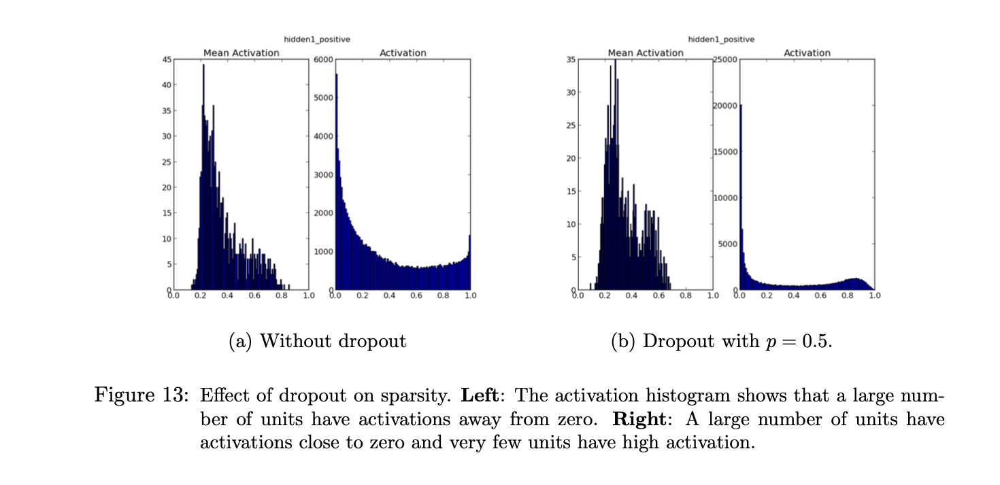

12 Dropout - applied to RBMs
The dropout unit is applied very similarly to RBMs as standard neural networks. There ics a vector of binary random variables r which augments the original RBM. Each random variable takes a 1 or 0 per probability p.
Figure 12 shows effect on hidden units.

Dropout appears to reduce co-adaptations in RBMs resulting in better generalization. It has a positive effect on sparsity as well.
I’m less familiar with RBMs so I can’t conclude why this section was included in the paper except to show that dropout extends its usefulness beyond standard neural nets.